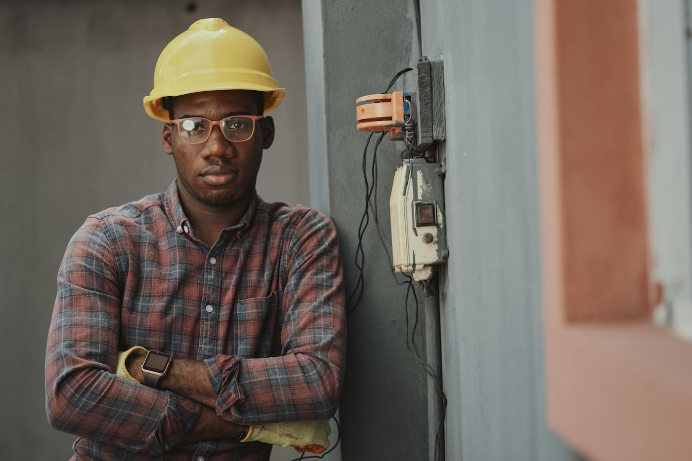
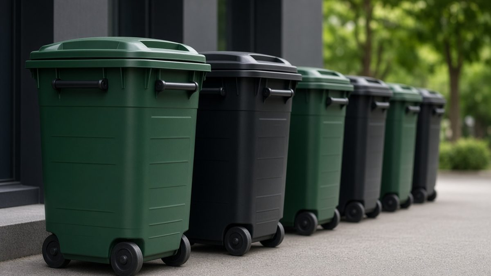

Weekly garbage pickup
Regular collection for residential routes across most of Gillespie County. Call or text to confirm your address.
Gillespie Waste Service provides weekly garbage collection throughout most of Gillespie County — including the Fredericksburg area. Locally owned by Kyle Koch.
A clean, practical first impression for a trusted local hauler — phone and email front and center so new customers can start service fast.

Regular collection for residential routes across most of Gillespie County. Call or text to confirm your address.

No runaround. Ask about your route, timing, and getting started.

Call, text, email, or message on Facebook — whichever is easiest.
Tell us where you are. We’ll confirm whether your address is on a route and help you get set up.
Gillespie Waste Service is a locally owned Gillespie County hauler led by Kyle Koch. The focus is simple: dependable weekly garbage collection and a person you can actually reach.
Hours aren’t listed here on purpose — please call or text to confirm the best time to connect.
Owner: Kyle Koch
Phone: (830) 456-5401 (call or text)
Email: Gillespiewaste@gmail.com
Facebook: facebook.com/Gillespiewaste